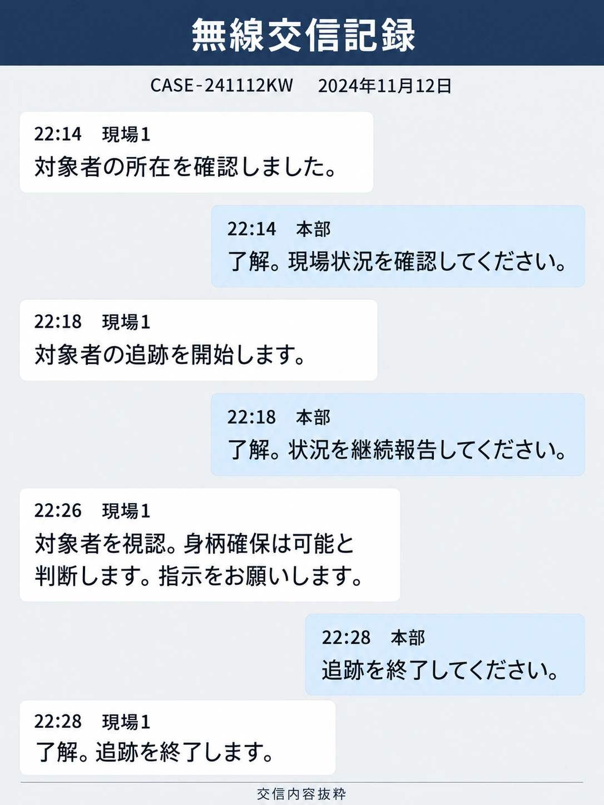

CASE FILE
CASE-241112KW 倉庫侵入・追跡事案
予告を伴う倉庫侵入後に対象者を追跡し、本部指示により追跡を終了した事案。
事件概要
2024年11月12日、江東区内の倉庫への侵入が確認された。侵入には予告が伴っており、現場担当が対象者の所在を確認した後、追跡を行った。
被害・現場状況
現場担当は対象者を視認し、身柄確保が可能な状況であると本部へ報告した。
捜査状況
対象者の所在確認から追跡終了までの経過を、現場担当と本部の無線交信記録に整理している。

処理区分：PT-207